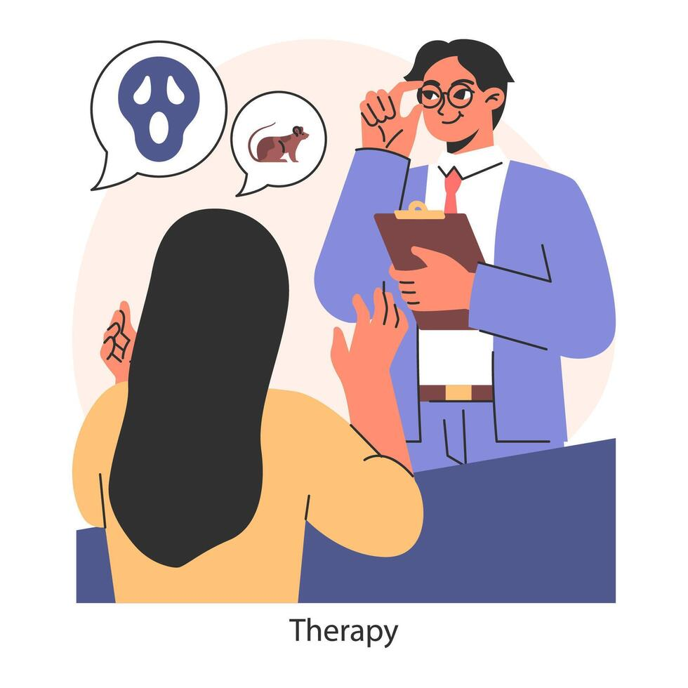

A fobia social tem tratamento e, com o apoio adequado, é possível superar os medos e viver com mais confiança e qualidade de vida.

Cada pessoa é única e o tratamento deve ser individualizado. Conheça algumas abordagens utilizadas:
Ajuda a identificar e mudar pensamentos negativos relacionados à ansiedade social.
Enfrentar situações sociais aos poucos pode reduzir o medo e aumentar a confiança.
Respiração profunda, meditação e mindfulness ajudam no controle da ansiedade.
Psicólogos e psiquiatras podem auxiliar no tratamento e acompanhamento adequado.
Buscar ajuda é um ato de coragem e o primeiro passo para melhorar sua qualidade de vida.